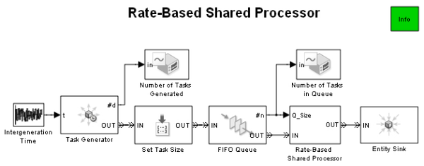
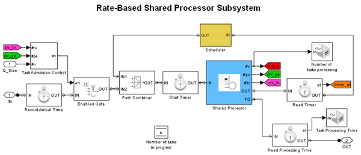
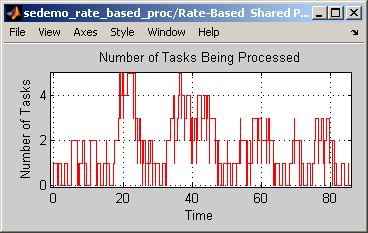
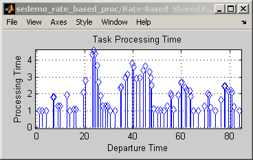
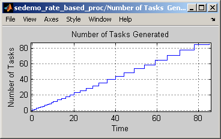
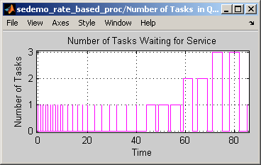
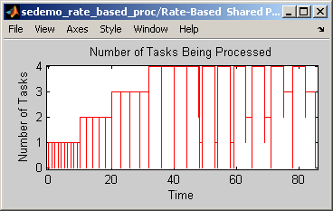
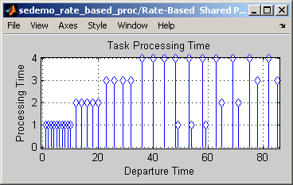

Rate-Based Shared Processor
Contents
Overview
This model illustrates one way to simulate a processor that works on multiple tasks by dividing its resources among them. In this model, the processing rate for each task changes based on the number of tasks being processed.
Structure of the Model
Warning: The behavior of the #pe signal in the <a
href="matlab:hilite_system('sedemo_rate_based_proc/Rate-Based Shared
Processor/Shared Processor','find')">sedemo_rate_based_proc/Rate-Based
Shared Processor/Shared Processor</a> block has changed. For details, see
the <a
href="matlab:helpview(fullfile(docroot,'toolbox','simevents','helptargets.map'),'num_pe_change_r2010a');">R2010a
section</a> of the SimEvents Release Notes. <a
href="matlab:setpref('simevents_firstuse','NumberPendingEntitiesDefinitionChange','off')">Click
here</a> if you do not want to see this message again.
 At the top level of the model, the Task Generator and Intergeneration Time blocks simulate the tasks that arrive at the shared processor. The amount of work or size of a task is set to 1 in the Set Task Size block. A new task waits in the FIFO Queue block until the Rate-Based Shared Processor subsystem can process the task.
Rate-Based Shared Processor Subsystem
The Rate-Based Shared Processor subsystem accepts tasks up to the capacity of the processor. Processor capacity, defined in the block labeled Shared Processor, is the maximum number of tasks the processor can work on in parallel.
Upon the arrival of a new task or the departure of a completed task, the Scheduler subsystem recomputes the residual processing time for each task. Since the rated-based processor divides its resources equally among tasks, if there are two tasks in progress, the residual processing time for a task will be twice as long as the amount of unfinished work for that task. If there are three tasks, the residual processing time will be three times as long and so on.
In this model, completion of a task is modeled using timeout events. When a task arrives at or departs from the Shared Processor block, the residual processing time is recomputed for each task in the Shared Processor. Blocks labeled Start Timer and Read Timer record how much time has elapsed for each task. This permits calculation of the amount of work the processor has completed since the last rescheduling. The work completed is used by the subsystem labeled Recompute Processing Time (in the Scheduler subsystem) to compute the amount of remaining work and residual processing time. This result is used by the Schedule Timeout block to reschedule the timeout event for the task.
Results and Displays
The model displays these scopes to demonstrate the behavior of the processor:
- Number of tasks generated by the Task Generator
- Number of tasks waiting in the FIFO Queue
- Number of tasks being processed at the shared processor
- Processing time of a completed task
The figures below illustrate the number of tasks being processed at the shared processor, and the processing time of a completed task during a simulation run. In this simulation, the intergeneration time of tasks is a random variable that is uniformly distributed between 0 and 2.4 second; the size of a task is 1 second; the capacity of the processor is 5.
Warning: The behavior of the #pe signal in the <a
href="matlab:hilite_system('sedemo_rate_based_proc/Rate-Based Shared
Processor/Shared Processor','find')">sedemo_rate_based_proc/Rate-Based
Shared Processor/Shared Processor</a> block has changed. For details, see
the <a
href="matlab:helpview(fullfile(docroot,'toolbox','simevents','helptargets.map'),'num_pe_change_r2010a');">R2010a
section</a> of the SimEvents Release Notes. <a
href="matlab:setpref('simevents_firstuse','NumberPendingEntitiesDefinitionChange','off')">Click
here</a> if you do not want to see this message again.
  A comparison of the figure labeled Number of Tasks Being Processed and figure labeled Task Processing Time reveals that a large number of simultaneous tasks causes the processor to take longer to finish each one. For example, between simulation time 15 and 25, the load of the processor is at a peak -- there are usually 4 tasks in the processor. The processing time of departing tasks is also longer, nearly 4 times the size of a task. This is a natural result of rate-based multitasking.
Behavior of Processor Under a Heavy Load
One way to see the processor's behavior when the number of arriving tasks exceeds the processor's capacity is to use a deterministic task arrival process, as follows:
- From 0 to 10 seconds -- 1 task arrives at the beginning of every second.
- From 10 to 20 seconds -- 2 tasks arrive at the beginning of every 2 seconds.
- From 20 to 32 seconds -- 3 tasks arrive at the beginning of every 3 seconds.
- From 32 to 44 seconds -- 4 tasks arrive at the beginning of every 4 seconds.
- From 44 to 59 seconds -- 5 tasks arrive at the beginning of every 5 seconds.
- From 59 to 71 seconds -- 6 tasks arrive at the beginning of every 6 seconds.
- From 71 to 85 seconds -- 7 tasks arrive at the beginning of every 7 seconds.
The figures below illustrate the number of tasks generated, the number of tasks waiting for service, the number of tasks being processed at the shared processor as well as the processing time of a completed task during a simulation run using the above arrival schedule. In this simulation, processor capacity is 4.
Warning: The behavior of the #pe signal in the <a
href="matlab:hilite_system('sedemo_rate_based_proc/Rate-Based Shared
Processor/Shared Processor','find')">sedemo_rate_based_proc/Rate-Based
Shared Processor/Shared Processor</a> block has changed. For details, see
the <a
href="matlab:helpview(fullfile(docroot,'toolbox','simevents','helptargets.map'),'num_pe_change_r2010a');">R2010a
section</a> of the SimEvents Release Notes. <a
href="matlab:setpref('simevents_firstuse','NumberPendingEntitiesDefinitionChange','off')">Click
here</a> if you do not want to see this message again.
Warning: The behavior of the #pe signal in the <a
href="matlab:hilite_system('sedemo_rate_based_proc/Rate-Based Shared
Processor/Shared Processor','find')">sedemo_rate_based_proc/Rate-Based
Shared Processor/Shared Processor</a> block has changed. For details, see
the <a
href="matlab:helpview(fullfile(docroot,'toolbox','simevents','helptargets.map'),'num_pe_change_r2010a');">R2010a
section</a> of the SimEvents Release Notes. <a
href="matlab:setpref('simevents_firstuse','NumberPendingEntitiesDefinitionChange','off')">Click
here</a> if you do not want to see this message again.
    In the task arrival schedule, 5 tasks arrive at time 44, 1 more than the processor's capacity. This causes the last arriving task to wait in the FIFO queue (see the figure labeled Number of Tasks Waiting for Service). The task waits in the queue until it is accepted by the processor at time 48 when 4 tasks complete their service and depart from the processor. Since the new task is the only task in the processor, it finishes service in 1 second and departs at time 49. You can observe similar service patterns at time 63 (when 2 pending tasks start service) and at time 75 (when 3 pending tasks start service).
Experimenting with the Model
- Change the size of tasks by changing the Value parameter for the attribute ResidualWork in the Set Task Size block.
- Change the interarrival time of tasks by changing the Vector of output values parameter in the Intergeneration Time block.
- Change the processor capacity by changing the Number of servers parameter in the block labeled Shared Processor in the Rate-Based Shared Processor subsystem. Specify an integer greater than or equal to 2.